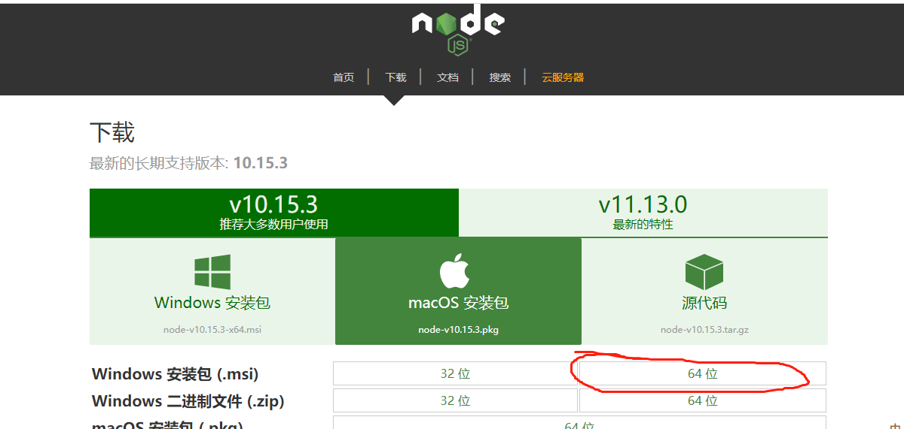
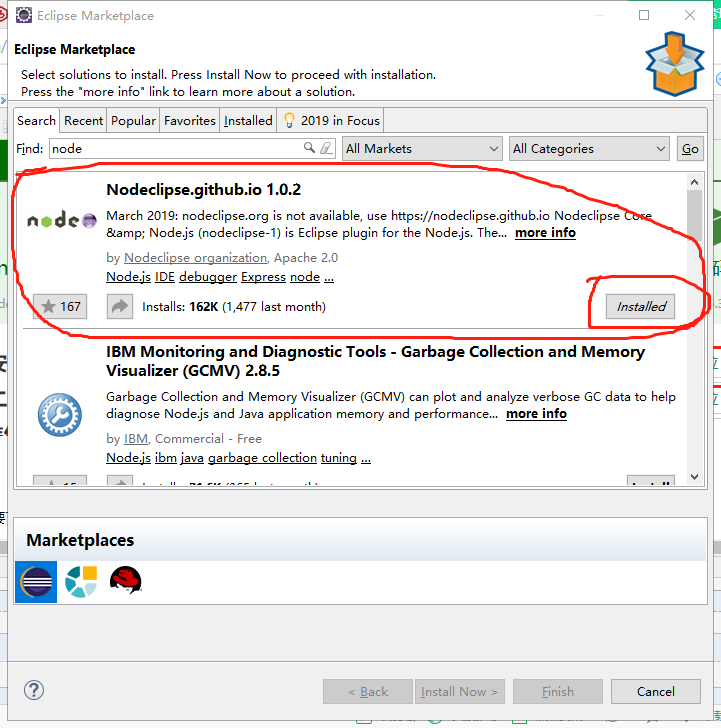
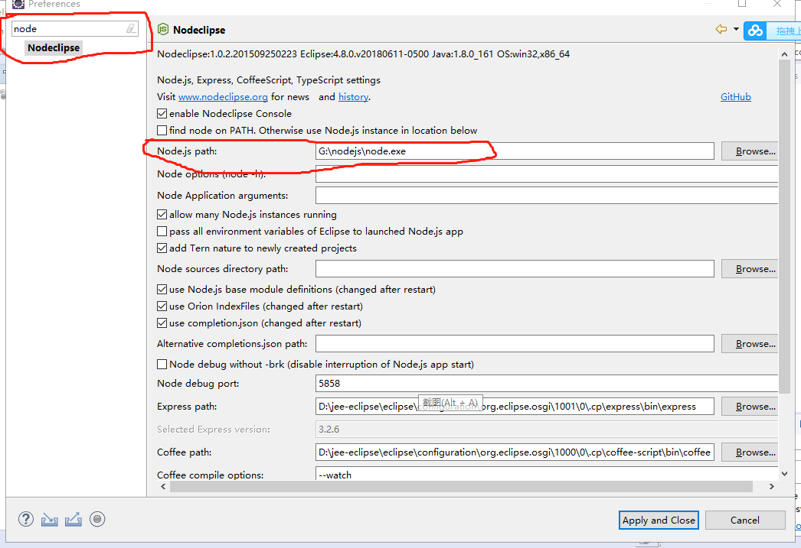
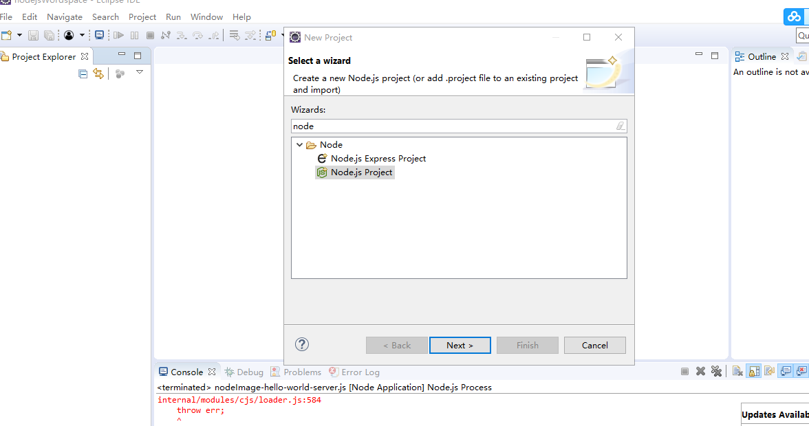
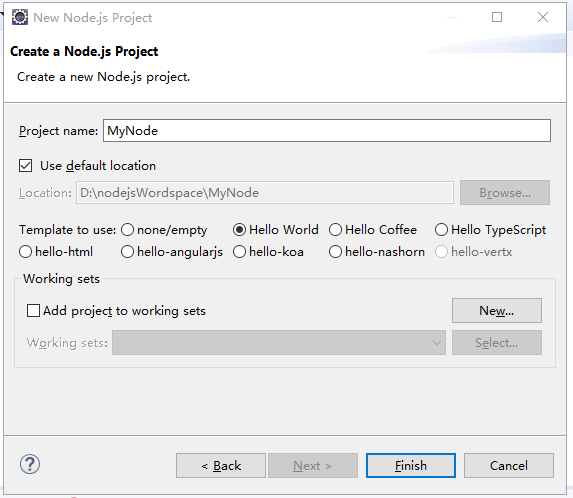
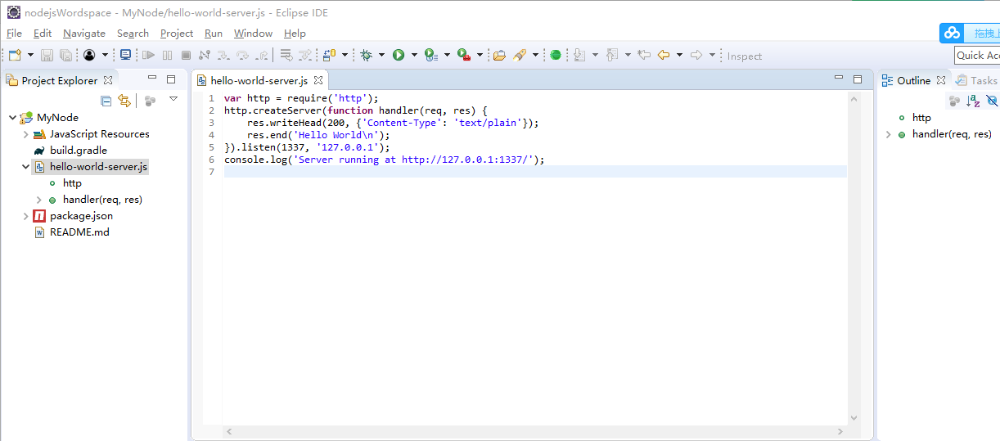
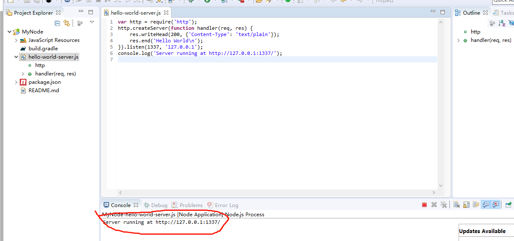
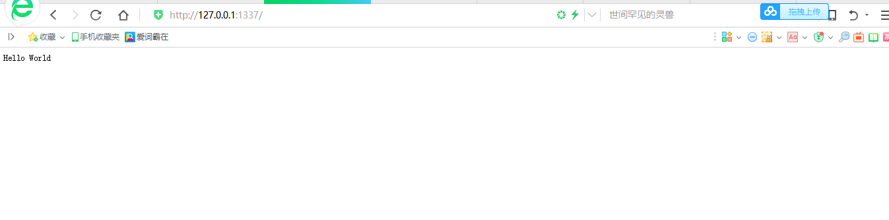

1.Node.js中文官网http://nodejs.cn/download/下载node.js
学习node.js需要有javascript基础,没有基础的可以在http://www.w3school.com.cn/js/index.asp上学习

下载好后，直接安装。
2.开发工具
我使用的是eclipse开发工具，首先需要下载node.js插件，在eclipse的Help中，选择Eclipse Marketplace ,在Find中输入node,找到插件

点击installed，等待下载中大概需要很久。
下载好后，在ecplise的window中preferences中搜索node,右边的node.js的path选择安装的node.js

3.创建node.js项目并运行访问
(1)右击新建，选择Node.js Project，然后next

(2)起一个项目名，然后选择类目，然后Finish

(3)这样我们一个名叫MyNode的项目就创建好了

(4)我们选择hello-word-server.js，右击run as ---->Node Application,运行起来

(5)控制台有个地址和端口，我们复制一下，然后在浏览器里访问下

(6)好了，可以访问到我们刚刚创建的node.js项目，Hello World,是不是很简单！大家有什么问题欢迎提问！